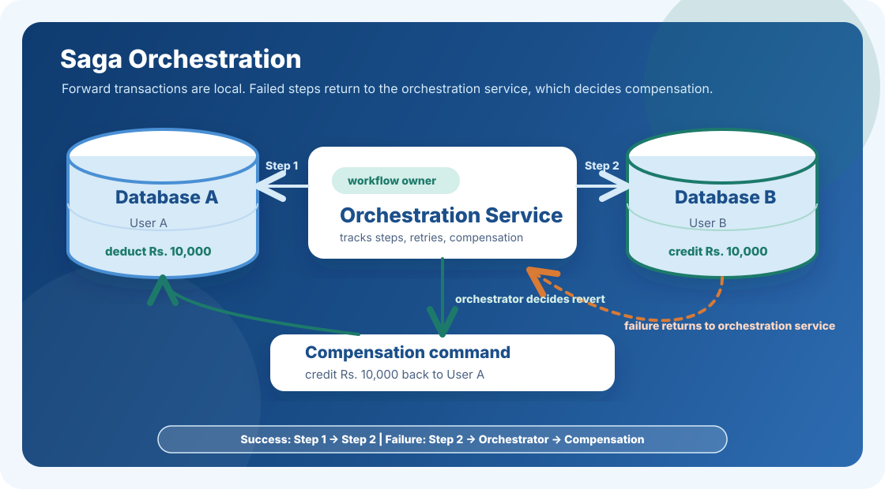

In a distributed system, your data often lives across multiple databases (while database sharding has used). When a single operation needs to update more than one of them, like transferring money between two users on different database machines, you cannot rely on a simple local transaction.
The classic solution, Two-Phase Commit (2PC), tries to coordinate this using a central coordinator. But it blocks resources, creates tight coupling, and can collapse entirely if the coordinator fails. This is why 2PC is widely treated as an anti-pattern in modern microservices.
The Saga Pattern
The core idea is simple: instead of one large distributed transaction, break the operation into a sequence of smaller, independent local transactions, one per service or database.
Each local transaction commits atomically on its own. If something fails midway, you do not roll back everything with a global lock. You run a compensation transaction to undo the steps that already completed.
Bank Transfer Example
Let us say User A transfers Rs. 10,000 to User B, and both users live on different database machines. An Orchestrator Service coordinates the workflow.
Orchestration Service
The Orchestration Service is the most important part of this flow. It is responsible for creating the transaction journey, deciding the order of steps, calling each microservice, tracking which local transactions have already committed, and preparing the reverse procedure for every completed step.
Because the orchestrator knows both the forward steps and the compensation steps, it can safely continue the workflow when things succeed, retry when a step fails, and execute the reverse path when the transfer cannot be completed.
- Step 1 - Deduct from User A: The orchestrator triggers a local transaction on Database A and deducts Rs. 10,000 from User A. This commits immediately on Database A.
- Step 2 - Credit User B: If Step 1 succeeds, the orchestrator triggers a local transaction on Database B and credits Rs. 10,000 to User B.
- If Step 2 fails: The orchestrator retries a defined number of times. If retries are exhausted, it runs a compensation transaction by crediting Rs. 10,000 back to User A.

The system does not achieve immediate consistency. But it eventually reaches a consistent state, either by completing the transfer or by compensating the completed debit.
Pros
- Higher availability: There are no global locks, so services can continue running during partial failures.
- Loose coupling: Each service manages only its own local transaction.
- Scales horizontally: Services can scale independently without global coordination overhead.
- Fault tolerant: Individual failures are handled through retries and compensations instead of system-wide rollbacks.
Cons
- Eventual consistency only: Intermediate states are briefly visible. You do not get the strong, immediate consistency of a local ACID transaction.
- Orchestrator becomes critical: In orchestration-based Saga, the orchestrator itself must be highly available and fault tolerant.
Two Flavours of Saga
- Orchestration-based Saga: A central orchestrator controls the sequence, decides what runs next, and handles failures. This is useful for complex workflows where centralized visibility matters.
- Choreography-based Saga: There is no central orchestrator. Services communicate by publishing and reacting to events. Service A completes its transaction and publishes a UserADebited event. Service B listens and runs its own transaction. This is simpler to start with, but harder to trace and debug at scale.
Why Bank Refunds Can Take 24 Hours
This is the Saga Pattern in action. When a bank transfer fails partway through a distributed system, a compensation transaction is queued. It runs asynchronously, sometimes within seconds, sometimes after a few minutes, and sometimes up to 24 hours depending on retry policies and queue depth.
Strict atomicity across distributed services is extremely difficult to guarantee. Eventual consistency is the trade-off modern systems accept to stay available and scalable.
Back to all posts